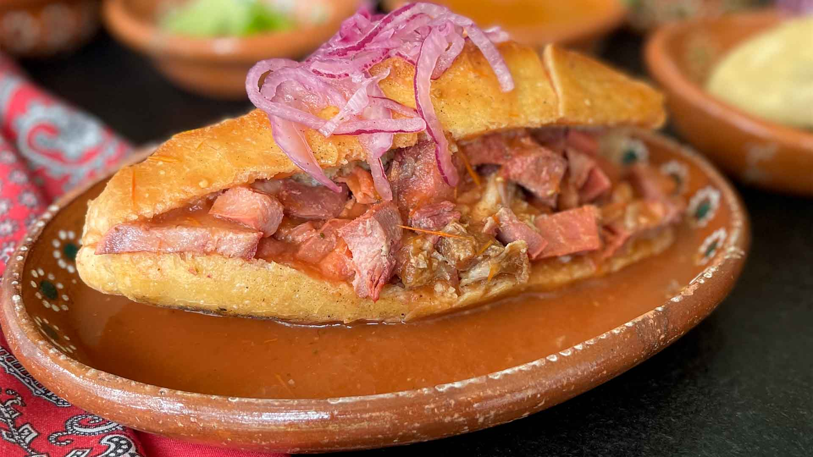
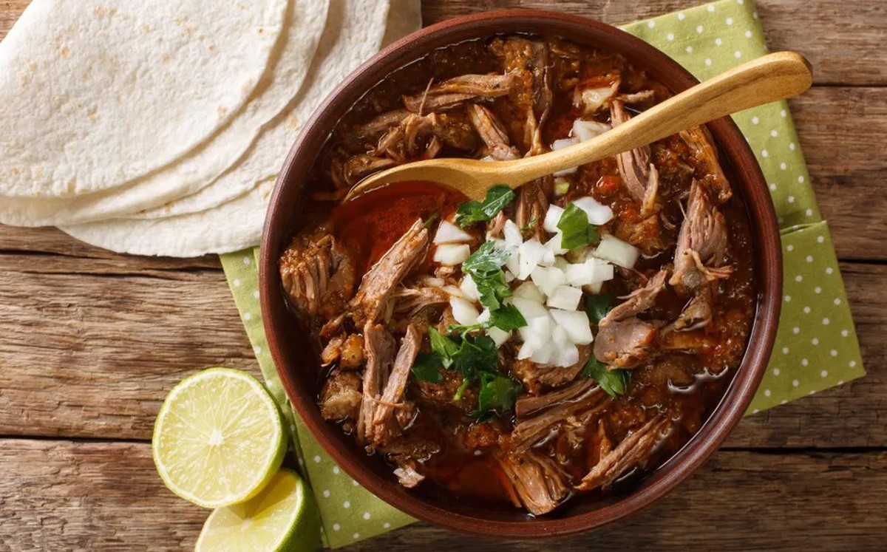
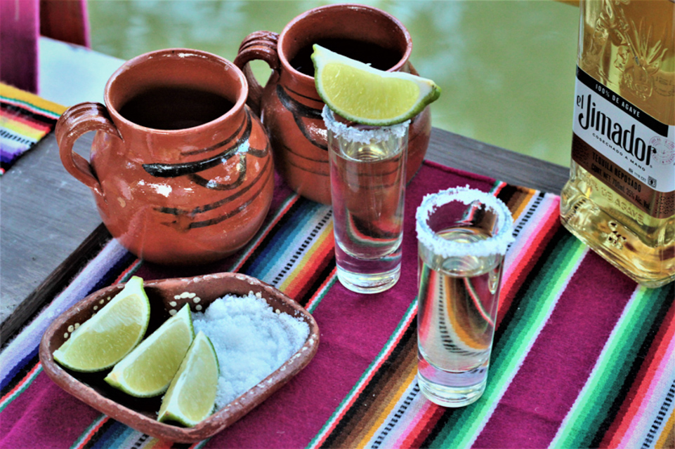

| Accesos rapidos | ||
|---|---|---|
| Tabla gastronomica | Galeria | Mas gastronomia |
Introduccion
La gastronomia de Jalisco es una de las mas famosas de Mexico por la variedad de sus platillos, el uso de ingredientes tradicionales y el sabor tan caracteristico de sus recetas. Muchos alimentos del estado son conocidos en todo el pais y algunos incluso en el extranjero.
Comer en Jalisco no solo significa alimentarse, sino tambien participar en una tradicion que forma parte de reuniones familiares, celebraciones populares, fiestas patronales y costumbres de la vida diaria. Por esta razon, la comida jalisciense tiene un gran valor cultural.
Platillos tipicos
- Torta ahogada: Pan relleno de carne y banado en salsa.
- Birria: Guiso tradicional con carne y especias.
- Pozole: Platillo elaborado con maiz y carne, muy comun en fiestas.
- Carne en su jugo: Alimento muy conocido en Guadalajara.
- Jericalla: Postre tipico de sabor dulce y apariencia dorada.
Bebidas tradicionales
- Tequila: Bebida emblematica del estado y de Mexico.
- Tejuino: Bebida refrescante preparada con maiz fermentado.
- Aguas frescas: Muy consumidas para acompanar la comida.
- Ponches y bebidas caseras: Comunes en fiestas y temporadas especiales.
Postres y antojitos
Ademas de sus platillos fuertes, Jalisco tambien destaca por sus postres y antojitos regionales. La jericalla es uno de los mas famosos, pero tambien existen otros dulces tradicionales que suelen venderse en mercados, ferias y negocios locales.
- Jericalla
- Dulces de leche
- Tamales
- Antojitos regionales
Tabla gastronomica
| Alimento o bebida | Caracteristicas | Momento de consumo |
|---|---|---|
| Torta ahogada | Muy popular, con salsa y pan salado | Comidas informales y antojo urbano |
| Birria | Guiso con caldo condimentado | Celebraciones y fines de semana |
| Pozole | Preparacion con maiz y carne | Fiestas y reuniones familiares |
| Jericalla | Postre dulce | Despues de la comida |
| Tequila | Bebida elaborada con agave | Brindis y eventos especiales |
| Tejuino | Bebida fresca tradicional | Dias calurosos |
| Platillo destacado |
|---|
| La torta ahogada es uno de los alimentos mas representativos y reconocidos de la cocina jalisciense. |
Ingredientes frecuentes
- Maiz
- Chile
- Carne
- Pan
- Agave
- Especias
- Cebolla
- Salsas tradicionales
Importancia cultural de la comida
La gastronomia jalisciense tiene una gran importancia cultural porque esta presente en reuniones familiares, fiestas populares, celebraciones religiosas y actividades cotidianas. Muchas recetas se aprenden en casa y pasan de una generacion a otra, por lo que la comida funciona como un vinculo entre el pasado y el presente.
Ademas, varios platillos y bebidas se han convertido en simbolos del estado, lo que hace que la gastronomia tambien sea un elemento de identidad y orgullo regional.
Gastronomia y turismo
La comida tambien impulsa el turismo en Jalisco, ya que muchas personas visitan el estado atraidas por la fama de sus platillos y bebidas. Restaurantes, mercados, ferias y pueblos tradicionales permiten a los visitantes probar sabores locales y conocer mas sobre las costumbres de la region.
Por esta razon, la gastronomia no solo es importante en lo cultural, sino tambien en lo economico.
Platillos representativos



La torta ahogada, la birria y el tequila son algunos de los referentes gastronomicos mas conocidos de Jalisco.
La cocina jalisciense es una parte muy visible de la identidad del estado y una de sus expresiones mas apreciadas.
| Mas imagenes |
|---|

|

|
Informacion adicional sobre la gastronomia
La cocina de Jalisco tambien destaca porque es capaz de unir tradicion y vida cotidiana. Muchos de sus platillos son preparados tanto en celebraciones especiales como en comidas familiares, lo que significa que la gastronomia no pertenece solamente a restaurantes o festivales, sino que forma parte de la rutina diaria de muchas personas. Esa presencia constante ayuda a conservar recetas, tecnicas y costumbres culinarias.
Ademas, cada platillo suele relacionarse con una forma de convivencia. La birria puede asociarse con reuniones de fin de semana, el pozole con fiestas y fechas especiales, y las bebidas tipicas con espacios publicos y mercados tradicionales. Por lo tanto, la gastronomia no solo expresa sabor, sino tambien formas de reunion social y memoria familiar. Comer en Jalisco implica compartir, recordar y mantener vivas muchas tradiciones.
Por todo ello, la comida jalisciense tiene un valor que va mas alla de lo culinario. Representa identidad, historia, costumbre y orgullo regional. Su importancia se nota en la manera en que ha sido reconocida dentro y fuera del estado, convirtiendose en una de las expresiones mas queridas y representativas de Jalisco.
| Dato gastronomico curioso | |
|---|---|
| * | En Jalisco, muchos platillos no solo son comidas tipicas, sino tambien parte de reuniones, celebraciones y recuerdos familiares. |
Mas informacion sobre la gastronomia:
Gastronomia de Jalisco en Wikipedia